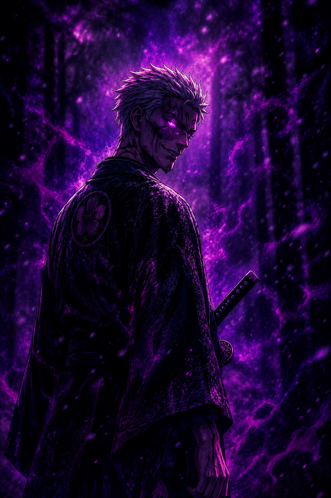

“O medo existe para lembrar quem nasceu acima dos outros.”
O Homem Que Confunde Crueldade Com Poder
Goratsu Onizuka é o herdeiro do Clã Onizuka e o filho de Daikan Onizuka, criado desde a infância para acreditar que autoridade nasce do medo e que fraqueza merece punição.
Diferente de seu pai, cuja crueldade é fria e calculada, Goratsu é impulsivo, arrogante e profundamente violento. Ele não governa através da inteligência. Governa através da humilhação.
Desde jovem, cresceu cercado por privilégios, soldados e poder. Contudo, por trás de sua arrogância existe uma obsessão silenciosa: provar ao pai que é digno de sucedê-lo.
Foi ele quem perseguiu a família Kurosawa durante anos, usando impostos, violência e intimidação para esmagar lentamente qualquer traço de resistência.
Seu desprezo por Takeshi Kurosawa também cresceu com o tempo. Consumido pela inveja, Goratsu fabricou acusações falsas contra ele, levando-o à condenação pública por traição.
Apesar da brutalidade, Goratsu não é apenas um homem violento. Ele é perigoso porque acredita genuinamente estar certo.
Sob sua armadura e seus sorrisos cruéis, existe alguém vazio. Um homem incapaz de compreender amor, lealdade ou compaixão.
Goratsu não deseja apenas capturá-la.
Ele deseja quebrá-la.
“Alguns homens nascem monstros. Outros escolhem se tornar um.”